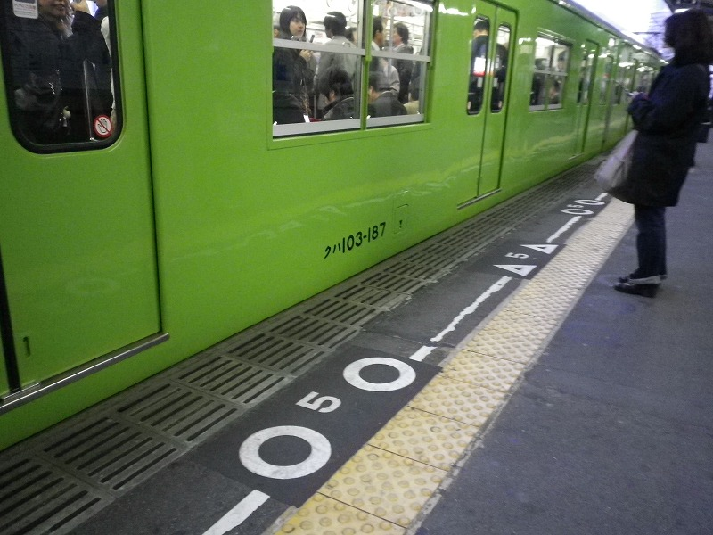
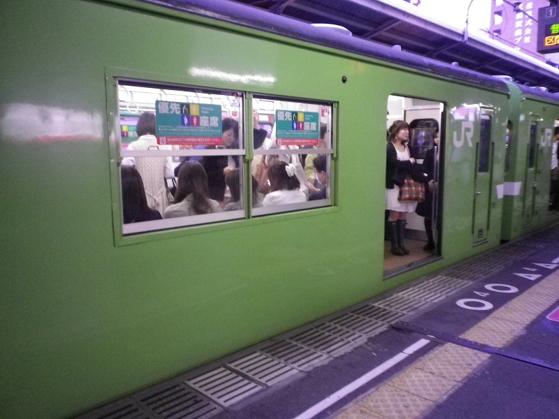
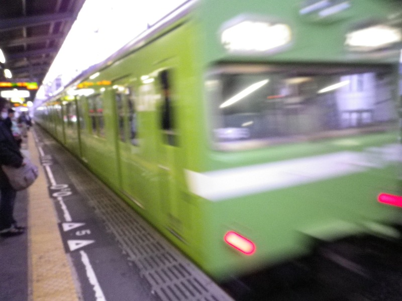

元北京氏の鉄道クイズの解答がメール送信された2012/4/18、帰路に付いた鉄子が見た物は・・
希少価値：低
鉄道クイズ解答メールの日にこれが来るとは。京橋駅ではとりあえず飛び乗って、天満駅までにカメラを準備
天満駅で撮影。近所の人に見られたらどうする

あわててつつもう一枚（かなり挙動不審）

加速していく低の顔を狙ってまた一枚。下手でなく臨場感たっぷりと解釈してくれぃ

本当にみなくなりましたね、低。ちょっとさみしく思う鉄子であった。
2012/4に再開し怒涛の更新。お願いだから細く長く続けてぇ牛涎草紙
北京
尼崎